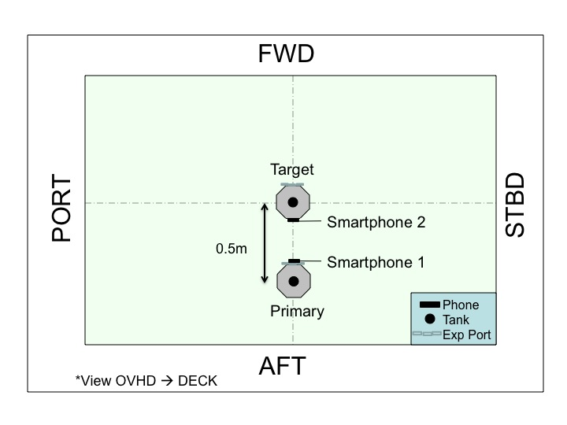

Approximate Positioning:
Please follow the table and figure below:
| Satellite | ORIENTATION | POSITION |
PRIMARY | Tank: OVHD Phone: FWD | 0.5 m AFT of center of volume |
TARGET | Tank: OVHD Exp. Port: FWD | Center of Volume |

Test Synopsis:
This test will begin with 10 seconds of initialization (free drift).
After initialization, the SPHERES Smartphone Workbench will allow you to run a plan on the primary satellite. Refer to the Test Plan for the order in which to run the plans.
The first time you run each plan, simply monitor plan execution.
The second time you run each plan, use manual control to optimize the view of a target in the Smartphone image. The target for each plan is listed in the Test Plan. When you are done with manual control, resume the plan. The test will terminate automatically when the plan is complete.